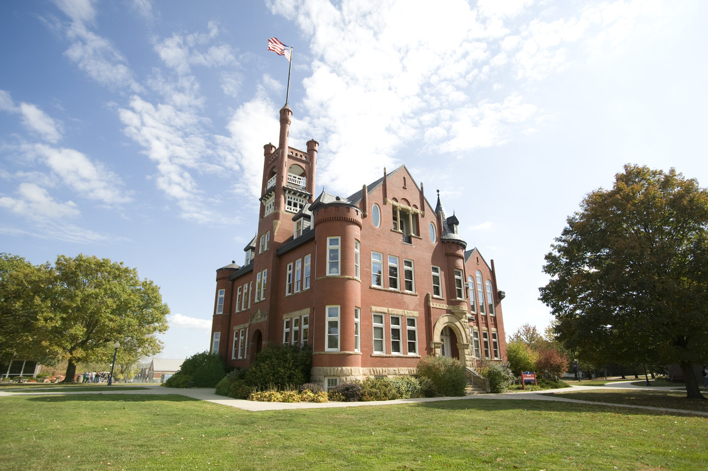

About Lamoni
Lamoni is a city in Decatur County, Iowa, United States. The population was 2,324 at the 2010 census. Lamoni is the home of Graceland University, affiliated with the Community of Christ, and the city was the church's headquarters from 1880 to 1920 when it moved to Independence, Missouri. You can shop at the Amish stores and homes, art galleries and gift shops. You can go biking and walking on the trails. Also you can go and play nine-hole golf course and disc golf course. It is close to Nine Eagles State Park and Slip Bluff County Park for camping and fishing. There is a Civil War Re-enactment and Living History event, and lighted holiday parade and intercultural festivals.
Linden Street Coffee House: The Linden Street Coffee House is on Main Street of Lamoni, where you can see many other interesting stores. The coffee shop serves a wonderful hot coffee and tea. Also, they serve a great healthy and fresh food. The coffee shop it is a place where people can have an amazing time, eat and relax.
The Coliseum: The Coliseum Theatre is owned by Graceland University and it is operated by Graceland Students. It is also a place where you can go and spend some time with your family or friends and enjoy watching a great movie while eating popcorns.
GU: Graceland University is a private liberal arts university with campuses in Lamoni, Iowa and Independence, Missouri. The university offers degree completion and master degree programs at satellite campuses in Centerville and Cedar Rapids, Iowa and Trenton, Missouri. It also offers undergraduate and graduate programs online. The university was founded in 1895.
Livestock Auction: The Livestock Auction is the biggest Livestock Auction in Decatur County. Every Thursday they have a huge livestock market.
Lamoni Community Center: The Lamoni Community Center welcomes families, groups, and individuals who need a friendly location to meet. The building includes two separate rooms, along with a kitchen connected to the dining room.

My experiences Living Here
I have been living in Lamoni, Iowa for three years and I'm currently student a at Graceland University. One positive thing about living in Lamoni is that High School and College students can stay focused in school and there are no distractions in this town. I have been staying in Lamoni for the past three summers as well as working and taking classes over the summer. Also, everyone knows each other and people help each other in this town. Lamoni is very relaxing and beautiful town. Instead of being on your phone all day you can go out and enjoy the beautiful nature with friends or family. You can even spend your time on so many other interesting activities here. However the one negative thing about living here is that if you are coming from a big city you are most likely going to be bored all the time and you will probably not be able to get use to this place. Also, there are not many grocery stores and the closest Walmart is 30 minutes away from Lamoni and this can be a struggle for students who do not have a car.